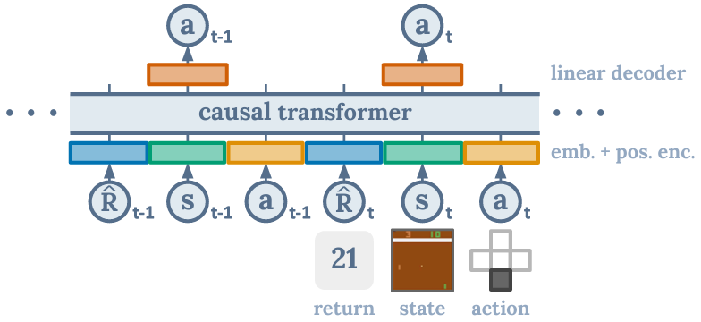

目次
Overview
"Dicision Transformer: Reinforcement Learning via Sequence Modeling"は、強化学習（Reinforcement Learning, RL）タスクを解決するために、Transformerモデルを使用するアプローチです。このモデルは、従来の強化学習アルゴリズムと異なり、シーケンスモデリングとして強化学習問題を捉えます。主な特徴として、教師あり学習のように過去の経験データから直接学習し、決定（decision-making）を行います。このページでは、その内容を順に追っていきます。
Abstract
私たちは、強化学習（Reinforcement Learning, RL）をシーケンスモデリング問題として抽象化するフレームワークを紹介します。 これにより、トランスフォーマーアーキテクチャのシンプルさとスケーラビリティ、そしてGPT-xやBERTといった言語モデリングにおける進展を活用することが可能になります。 特に、私たちはDecision Transformerというアーキテクチャを提案し、RLの問題を条件付きシーケンスモデリングとして捉えています。 従来のRLアプローチが価値関数の適合や方策勾配の計算を行うのとは異なり、Decision Transformerは因果関係のあるマスク付きトランスフォーマーを利用して、最適な行動を単に出力します。 自己回帰モデルを目標とするリターン（報酬）、過去の状態、行動に条件付けることで、Decision Transformerモデルは目標のリターンを達成する将来の行動を生成することができます。 シンプルでありながら、Decision TransformerはAtari、OpenAI Gym、Key-to-Doorタスクにおいて、最先端のモデルフリーオフラインRLベースラインと同等かそれ以上のパフォーマンスを発揮します。
図1: Decision Transformerのアーキテクチャ。 状態、行動、およびリターンは、それぞれのモダリティに特化した線形埋め込みに入力され、エピソードのタイムステップを示す位置エンコーディングが追加されます。 トークンは、因果自己注意マスクを使用して自己回帰的に行動を予測するGPTアーキテクチャに入力されます。